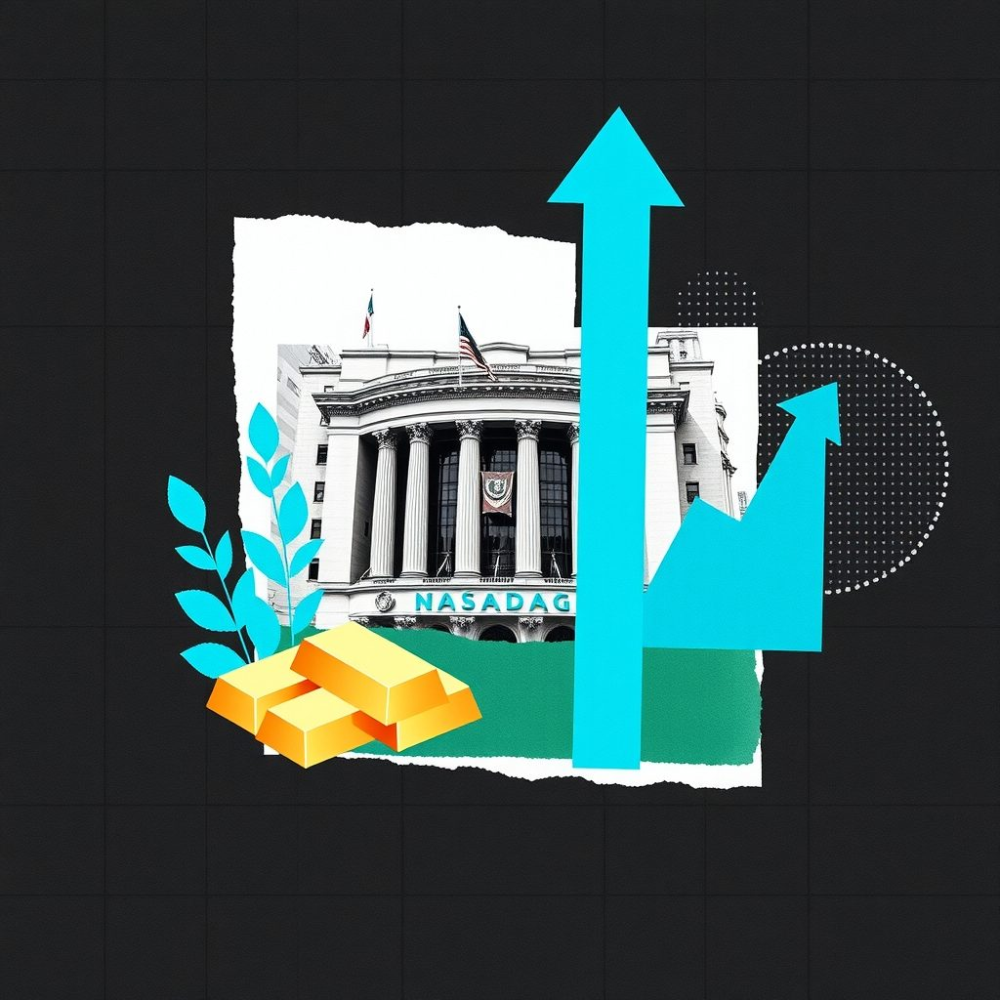

Nasdaq Hits Highs as Wall Street Splits and Yields CreepNasdaq ឡើងថ្លៃខ្ពស់ ខណៈទីផ្សារភាគហ៊ុនអាមេរិកបែងចែកនិន្នាការនិងអត្រាផលចំណូលកើនឡើង
XAU/USD impact: ▲ Bullishផលប៉ះពាល់លើ XAU/USD: ▲ ឡើង

Wall Street closed the week divided as the Nasdaq reached new highs while the Dow slipped and Treasury yields ticked upward. Precious metals including gold advanced alongside this broader market action.
ទីផ្សារភាគហ៊ុន Wall Street បិទបញ្ចប់សប្តាហ៍ដោយមានភាពខុសគ្នា ដោយ Nasdaq ឡើងដល់កម្រិតខ្ពស់ថ្មី ខណៈ Dow ធ្លាក់ចុះ។ មាសបានកើនឡើងទន្ទឹមនឹងការប្រែប្រួលនៃទីផ្សារទូទៅនេះ។
Wall Street finished the week with mixed results as major stock indices diverged significantly. The Nasdaq Composite advanced with a daily jump to close at 27,190.86, while the Dow Jones Industrial Average slid over the course of the week. Meanwhile, the S&P 500 posted a daily gain despite logging a weekly loss, and the Russell 2000 inched upward. Amid this divided equity performance, Treasury yields crept higher and crude oil prices declined.
ទីផ្សារភាគហ៊ុន Wall Street បានបញ្ចប់សប្តាហ៍ជាមួយនឹងលទ្ធផលចម្រុះ ខណៈដែលសន្ទស្សន៍ភាគហ៊ុនសំខាន់ៗបានបែងចែកនិន្នាការយ៉ាងខ្លាំង។ សន្ទស្សន៍ Nasdaq Composite បានកើនឡើងប្រចាំថ្ងៃដើម្បីបិទនៅកម្រិត 27,190.86 ចំណែកឯ Dow Jones Industrial Average បានធ្លាក់ចុះក្នុងអំឡុងពេលសប្តាហ៍នេះ។ ទន្ទឹមនឹងនេះ S&P 500 បានកើនឡើងប្រចាំថ្ងៃ ទោះបីជាមានការខាតបង់ប្រចាំសប្តាហ៍ក៏ដោយ ហើយ Russell 2000 ក៏បានកើនឡើងបន្តិចផងដែរ។ ចំពេលមានដំណើរការភាគហ៊ុនដែលបែងចែកគ្នានេះ អត្រាផលចំណូលพันธบัตร (Treasury yields) បានកើនឡើងបន្តិចម្ដងៗ និងតម្លៃប្រេងឆៅបានធ្លាក់ចុះ។
Across the broader commodities complex, precious metals including gold, silver, and copper all advanced during the session. The transmission channel connecting these cross-market movements to gold often involves shifting expectations around growth assets, currency dynamics, and broader risk sentiment. As equity indices split and bond yields drift, precious metals frequently attract flows from investors seeking alternative stores of value or portfolio balance.
ទូទាំងទីផ្សារទំនិញរួមបញ្ចូលទាំងលោហៈមានតម្លៃដូចជា មាស ប្រាក់ និងទង់ដែង សុទ្ធតែបានកើនឡើងក្នុងអំឡុងពេលវគ្គជួញដូរនេះ។ បណ្តាញបញ្ជូនដែលភ្ជាប់ចលនាទីផ្សារឆ្លងគ្នានេះទៅនឹងមាស มักពាក់ព័ន្ធនឹងការផ្លាស់ប្តូរការរំពឹងទុកជុំវិញទ្រព្យសកម្មកំណើន សក្ដានុពលរូបិយប័ណ្ណ និងអារម្មណ៍ហានិភ័យទូទៅ។ នៅពេលដែលសន្ទស្សន៍ភាគហ៊ុនបែងចែកនិន្នាការ និងអត្រាផលចំណូលសញ្ញាប័ណ្ណប្រែប្រួល លោហៈមានតម្លៃតែងតែទាក់ទាញលំហូរប្រាក់ពីអ្នកវិនិយោគដែលស្វែងរកជម្រើសរក្សាទុកតម្លៃផ្សេងទៀត។
For gold traders, a balanced perspective requires weighing competing macroeconomic forces. Supportive conditions for XAU/USD typically materialize when equity market divergence creates safe-haven demand or when broader economic uncertainties prompt a reassessment of risk. Conversely, rising Treasury yields and strong performance in select growth sectors can create headwinds for non-yielding bullion by increasing the opportunity cost of holding the metal.
សម្រាប់អ្នកជួញដូរមាស ទស្សនៈមានតុល្យភាពតម្រូវឱ្យមានការថ្លឹងថ្លែងពីកម្លាំងម៉ាក្រូសេដ្ឋកិច្ចដែលប្រកួតប្រជែងគ្នា។ លក្ខខណ្ឌគាំទ្រសម្រាប់ XAU/USD ជាទូទៅកើតឡើងនៅពេលដែលភាពខុសគ្នានៅក្នុងទីផ្សារភាគហ៊ុនបង្កើតតម្រូវការសុវត្ថិភាព ឬនៅពេលដែលភាពមិនប្រាកដប្រជាផ្នែកសេដ្ឋកិច្ចទូទៅជំរុញឱ្យมีการវាយតម្លៃឡើងវិញនូវហានិភ័យ។ ផ្ទុយទៅវិញ ការកើនឡើងនៃអត្រាផលចំណូលพันธบัตร និងដំណើរការដ៏រឹងមាំនៅក្នុងវិស័យកំណើនមួយចំនួនអាចបង្កើតជាឧបសគ្គសម្រាប់មាស ដោយសារតែការកើនឡើងនៃតម្លៃឱកាសនៃការកាន់កាប់លោហៈនេះ។
Market participants should closely monitor upcoming developments in Treasury yield trajectories, broader stock market volatility, and subsequent economic data releases. Observing how precious metals interact with these shifting cross-asset signals will provide vital clues for assessing near-term market direction.
អ្នកចូលរួមទីផ្សារគួរតែតាមដានយ៉ាងដិតដល់នូវការវិវត្តន៍នាពេលខាងមុខនៃគន្លងអត្រាផលចំណូលพันธบัตร ភាព biến động នៃទីផ្សារភាគហ៊ុនទូទៅ និងការប្រកាសទិន្ន័យសេដ្ឋកិច្ចជាបន្តបន្ទាប់។ ការសង្កេតមើលពីរបៀបដែលលោហៈមានតម្លៃមានអន្តរកម្មជាមួយនឹងសញ្ញាឆ្លងទីផ្សារទាំងនេះ នឹងផ្តល់នូវតម្រុយដ៏សំខាន់សម្រាប់ការវាយតម្លៃទិសដៅទីផ្សាររយៈពេលខ្លី។
Key takeawaysចំណុចសំខាន់ៗ
- Wall Street closed mixed with the Nasdaq hitting new highs while the Dow slipped.
- ទីផ្សារ Wall Street បិទបញ្ចប់ដោយចម្រុះ ខណៈ Nasdaq ឡើងដល់កម្រិតខ្ពស់ថ្មី និង Dow ធ្លាក់ចុះ។
- Gold, silver, and copper all advanced as Treasury yields crept higher and oil fell.
- មាស ប្រាក់ និងទង់ដែង សុទ្ធតែបានកើនឡើង ខណៈអត្រាផលចំណូលพันธบัตรកើនឡើងបន្តិច និងប្រេងធ្លាក់ចុះ។
- Traders should monitor equity divergence, bond yield movements, and broader safe-haven flows.
- អ្នកជួញដូរควรតាមដានការបែងចែកភាគហ៊ុន ការផ្លាស់ប្តូរអត្រាផលចំណូលพันธบัตร និងលំហូរសុវត្ថិភាពទូទៅ។
Original commentary by THE MARKET CODE, based on public reporting from Yahoo! Finance: GC=F News. Written with the help of AI. Educational only, not financial advice.
មតិវិភាគដើមដោយ THE MARKET CODE ផ្អែកលើការរាយការណ៍សាធារណៈពី Yahoo! Finance: GC=F News។ សរសេរដោយមានជំនួយពី AI។ មាតិកាអប់រំប៉ុណ្ណោះ មិនមែនជាដំបូន្មានហិរញ្ញវត្ថុទេ។